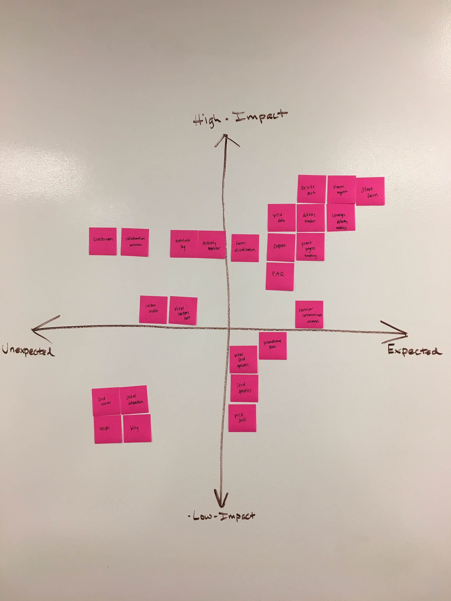
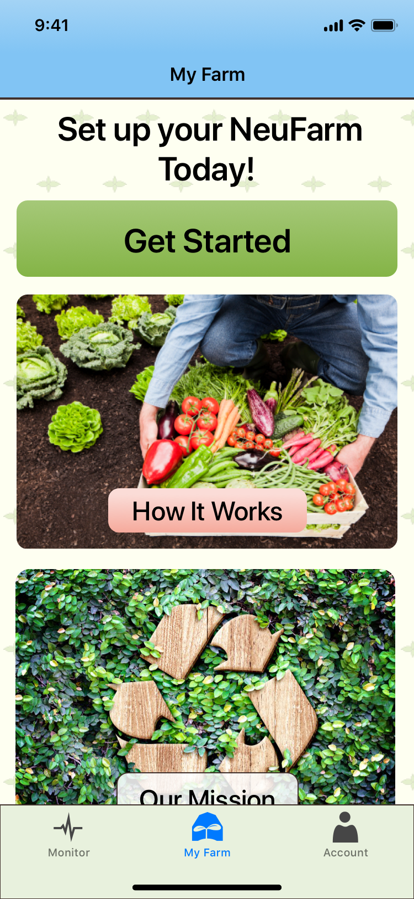
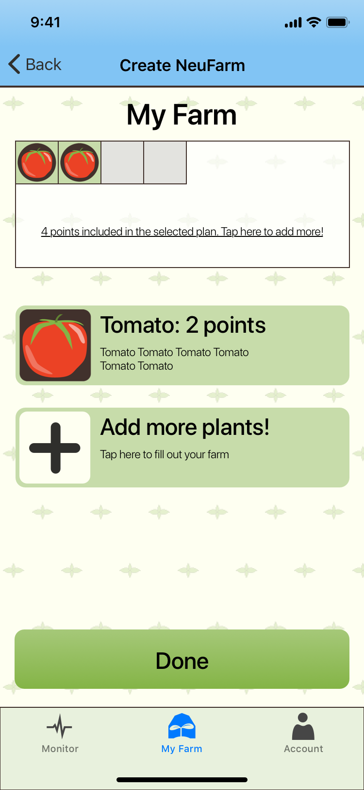
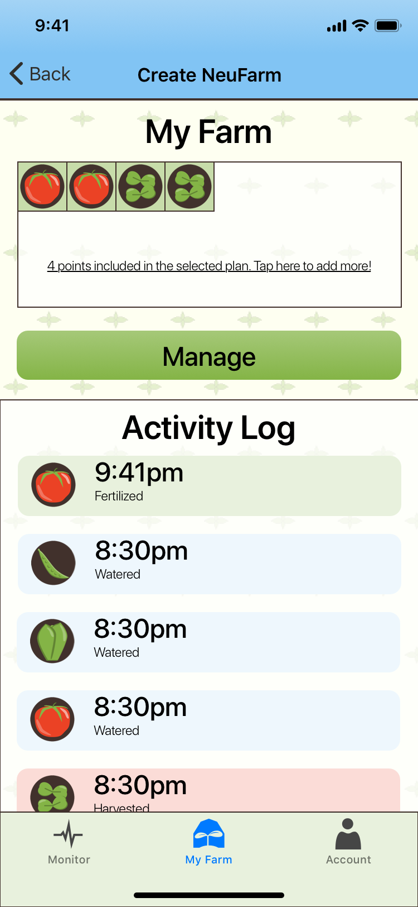

While this was happening, I was also researching agricultural visual design and branding. Imagery of produce and warm colors were prevalent and it was clear that the NeuFarms branding should incorporate some of the same.

The goal of this project was to design a mobile app for a new startup, NeuFarms. NeuFarms aims to grow produce in hydroponic greenhouses and the mobile app will allow customers to interface with the greenhouse and grow exactly what they want. My roles on this project were Visual Designer, Project Manager, and Information Architect. The team also included an Interaction Designer and a User Researcher. The project took place over a three week period.
During our initial meeting with the client, it became clear that I would be developing the branding for NeuFarms in addition to my aforementioned roles.
As the project manager, I started the project off by creating a statement of work by meeting with my teammates and discussing deliverables and deadlines for the project. I was also responsible for giving the client daily project updates and arranging meetings with the client.
Fast-forward a bit in the project, as a team we started to narrow down our MVP features. In order to do this, we brainstormed all possible features, including features that the client mentioned they were interested in including. Then, based on research, we sorted the features onto a Impact vs. Expectation matrix.
Through this exercise, we found that the most important features would be those centered around monitoring and customizing produce.
Next, we performed a card sort to come up with the navigation for the app. There would be a tab bar with three tabs: My farm, monitor, and account.
While this was happening, I was also researching agricultural visual design and branding. Imagery of produce and warm colors were prevalent and it was clear that the NeuFarms branding should incorporate some of the same.
During the first week I also started working on a logo. The client provided some logo concept sketches. I started off by hand sketching and exploring new concepts. Next I went into Adobe Illustrator and further iterated on my designs. While designing logos I had a correspondence with the client to discuss logo designs and inform my design direction.
In order to solidify the brand identity, I sat down with the client and facilitated a branding card activity.
After some further refining via email, we settled on the words Sustainable, Custom, and Empowering.
To further create the brand identity, I put together a moodboard using images that the client provided. In order to get the images, I asked the client to send me images that they felt represented the brand identity.

After the images were condensed down to a place I was happy with, I pulled colors from the moodboard for a color palette.

Based on my research, I chose colors that would represent a sunny day on a farm.
Next I created four extra shades of each color that could be used in illustrations or as highlights/lowlights.

For the type in the NeuFarms app I decided to use the system font, San Francisco, because we are designing for an iPhone app. SF has good legibility and a it has been carefully designed for legibility on phone displays. It also has the sleek Apple feel to it, which fits in nicely to the NeuFarms brand.

Using the colors and an initial wireframe I started experimenting with colors for the background, header bar, and tab bar. A blue sky gradient header bar, off-white background with sprout rows, and a light green tab bar.
In order to create a more polished appearance and game-ified/fun atmosphere within the app, I created a set of icons that would represent produce. There is a small version of each icon which can be used as a visual representation of farm blocks allotted to each crop. The larger icons are used for representing crops during the selection and management process.
The UI elements include a variety of boxes, cards and buttons. The UI elements all use a 10px corner radius in order to make them more visually appealing. For the action buttons, I used a slight gradient in order to give additional depth and make them more appealing to tap on.
  I compiled all of my design elements and choices into a style guide for the client. This can be used to inform future work on the app and make sure that any new branding content is consistent w ith the material that I produced.